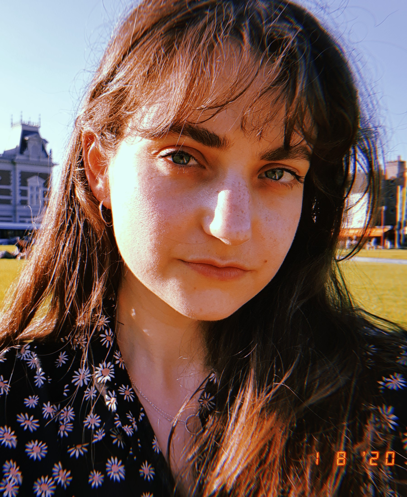

Nitzan Shalev

Who am I?
Hi! I'm Nitzan Shalev, from Israel. I'm 26 years old and currnetly pursuing my M.A. in Book and Digital Media Studies at Leiden University. I chose this program because I have a passion for exploring the ways digital media can enhance our connection to the humanities and our access to knowledge and items of shared cultural heritage.
Prior Education
Earlier this year I completed my B.A. at Tel Aviv University, in Israel. I majored in English literature, Hebrew literature, and translation studies, where I gained a comprehensive literary education in a wide array of topics, including classics, historical, local, poetry, contemporary, and creative writing, as well as a fair amount of history - of the book or otherwise. I also focused on translation studies, in both hands-on workshops and theoretical classes.
At TAU, I also co-founded and edited Caesura, Tel Aviv University's English-language literary magazine, where we published creative writing by both Tel Aviv and other University students nationwide.
Relevant Links
- For more information on Tel Aviv University, click here.
- For more information on Caesura - though unfortunately it is not as frequently updated as it was in my time as editor - click here.
- To read Caesura vol. II, click here.
Languages
| English | Fluent |
| Hebrew | Fluent |
Work Experience / Manditory Military Service
During my B.A. studies I worked as a freelance translator.
Before university, I served in the Israeli Defence Forces Spokesperson's Unit as a Communications NCO in the Israeli Media Branch. My job included producing and writing IDF-related news and editorial items for local newspapers and radio stations and facilitating contact between the IDF and various media outlets.
Hobbies
I enjoy running outdoors, reading, pottery, crafts, traveling abroad, hiking, visiting museums, playing Dungeons and Dragons, and listening to podcasts.